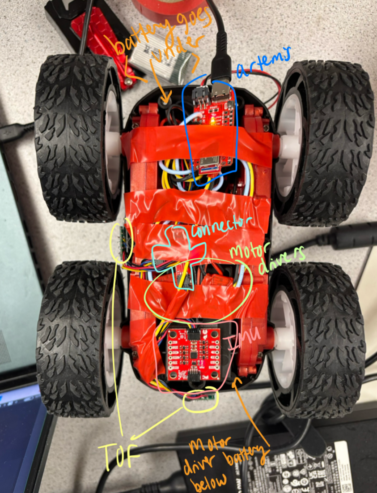

Motors and Open Loop Control Lab Report
Objective
The purpose of this lab is to change from manual to open loop control of the car.
Prelab
Wiring Diagram:

Battery Discussion:
The motor drivers and the Artemis each have separate batteries to accommodate the motors' higher current demand (850 mAh) while also reducing signal interference since the motors require a higher current than the Artemis (650 mAh).
Lab Tasks
Oscilliscope & Power Supply Setup:

Power Supply Settings:
The motors are controlled by setting the pins either HIGH or LOW to move forward or backward. To ensure the signals were functioning correctly, I first tested them individually on an oscilloscope before soldering them to the car's motors. I powered the motor drivers by connecting their Vin and Ground pins to a 3.7V DC power supply, based on the datasheet and motor specifications. The OUT1 and OUT2 pins were then connected to oscilloscope probes for monitoring.
Code to cycle through PWM Values:
Oscilliscope Outputs:
Attaching Motor Drivers, Assembling Car:
Wheels Turning Each Way:
Code to Turn Wheels:
Whole System Running on Batteries & Bluetooth:
Car Assembled:
To assemble the car, I used gorilla tape to secure the hardware and then used electrical tape to contol the wires and hold in the Artemis.
PWM discussion:
I tested PWM values in interavls of 10 then 5 to deterime the lower limit needed to get the wheels to turn and the car to move foreward. I was able to get the car to move at 50 PWM, as shown below.Turing from rest took about 70 PWM.
Calibration:
To calibrate the car to drive straight, I used the 6ft of tape on the floor in lab and ran the car 15 times at a PWM of 75 for 2100 ms. I collected data of how far off the car was after each run, and averaged it. From that average (.98 feet left), I adjusted the left PWM by 16%, and collected more data. After three rounds of adjusting calibration, the car drove straight for 6 feet reliably. My final calibration factor was 1 PWM right : 1.282 PWM left.
Code:
Original Drift:
Calibrated:
Open Loop Code:
I created functions to make the car drive straight or turn in a specified direction and speed for a given amount of time. I then used those functions to make the car drive and turn. Different compilatons of on and off pins allow the car to move in different directions. Below is the code used.
Code:


Example move task:
Discussion:
This lab required a ton of trouble shooting. A few of my Artemis pins were shorted to ground, causing my motor drivers to not originaly work. I had trouble getting both my wheels to turn both ways and had to swap the pins they were connected to. It's important to keep the wires soldered onto the artemis cut flush to the board so they can't short to eachother or ground. A multimeter was super useful in identifying problem areas. Getting a fresh battery also solved problems when things started to operate wacky. This lab taught me about motor drivers and debugging!